So far, three chapters have been devoted to Android interface design. The application interface discussed so far is similar to a dialog interface. The drawback is that it is difficult to obtain accurate touchscreen input information, so it is hard to display accurate images based on the input interface. This chapter introduces the view-based interaction style interface. In this mode, you can enter information with accurate touchscreen input and display detailed images, which happen to be requirements for lots of game applications.
Display Output Framework
Unlike the dialog box–style interface, which consists of TextView, EditText, Button, and other window components, an interactive UI display directly uses a View class. This section introduces the basic framework of drawing in the view (that is, displaying images or graphics).
To display images and graphics in a view, you need to put drawing code into its onDraw function. The onDraw function is called whenever images need to be redrawn in a view, such as when the view is displayed when the application starts, when the front cover object (such as a view, an event, or a dialog box) on top of the graphic view is moved away, when the view from the bottom layer is moved into the top layer with the activity, or in similar circumstances. You’re advised to put the drawing code in the View.onDraw function, so you can ensure when the view needs to be displayed to the user. The view window can also immediately be displayed in its total output; otherwise, certain graphic view areas may not be refreshed or repainted.
Android drawing functions such as draw rectangle, draw oval, draw straight line, and display text are usually integrated into the Canvas class. When the View.onDraw callback executes, it brings with it a Canvas parameter that is used to get the Canvas object.
Android uses the Paint class to draw a variety of graphics. Paint contains a variety of brush attributes, such as color, fill style, font, and font size.
As described earlier in the book, the interface configuration style of the application code generated in Eclipse is as follows: an activity includes layouts, and a layout contains two layers of widget structures. For this reason, you set parameters for the setContentView function in the onCreate function of the activity as the layout to achieve this effect. To use the view-based interface, you need to change the default parameter layout of the setContentView function to a custom view class.
Here is an example that illustrates the process. Modify the GuiExam example project by using the following steps:
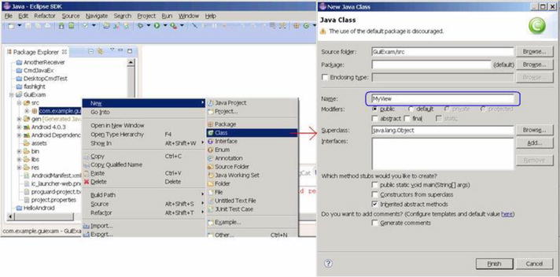
Figure 10-1.
Create a new class in the project
2.
Edit the source code of the newly added class (MyView.java). The content is shown next.
Line# Source Code
1 package com.example.guiexam;
2
3 import android.view.View;
4 import android.graphics.Canvas;
5 import android.graphics.Paint;
6 import android.content.Context;
7 import android.graphics.Color;
8 import android.graphics.Paint.Style;
9 import android.graphics.Rect;
10
import android.graphics.Bitmap;
11
import android.graphics.BitmapFactory;
12
import android.graphics.Typeface;
13 public class MyView extends View {
14 MyView(Context context) {
15 super(context);
16 }
17 @Override
18 public void onDraw(Canvas canvas) {
19 Paint paint = new Paint();
20 paint.setAntiAlias(true); // Sett anti-aliasing
21
// paint.setColor(Color.BLACK); // Set Color Black
22
// paint.setStyle(Style.FILL); // Set Fill Style
23 canvas.drawCircle(250, 250, 120, paint); // Draw Circle
24 paint.setColor(Color.RED); // Set color red
25 paint.setStyle(Style.STROKE); // Set style-Stroke ( no fill)
26 canvas.drawRect(new Rect(10, 10, 120, 100), paint); // draw rect
27 paint.setColor(0xff0000ff /*Color.BLUE*/ );
28 String str = "Hello!";
29 canvas.drawText(str, 150, 20, paint); // display text
30 paint.setTextSize(50); // Set Text Size
31 paint.setTypeface(Typeface.SERIF); // Set Typeface: Serif
32 paint.setUnderlineText(true); // Set Underline Text
33 canvas.drawText(str, 150, 70, paint); // Display text
Bitmap bitmap = BitmapFactory.decodeResource(getResources(),R.drawable.ic_launcher);
canvas.drawBitmap(bitmap, 0, 250, paint); // Display image
}
}
The code in line 13 adds extends View, which makes a custom class; in this case, MyView inherits from the View category. Lines 13‒16 create a custom class constructor function that calls the superclass. This constructor function is essential to prevent the following compilation error:
Implicit super constructor View() is undefined. Must explicitly invoke another constructor
Lines 17‒34 override the function to program various pieces of drawing code. You construct a brush—that is, a Paint object—for drawing in line 16, and you set it to eliminate jagged edges in line 17. Line 23 draws a circle (x = 250, y = 250); line 24 sets the brush color to red, and so forth.
The prototype of the setColor function is
void Paint.setColor(int color);
In Android, a four-byte integer is used to represent a color, based on α, red, green, and blue. This integer data format looks like this:
αα |
rr
|
gg
|
bb
|
From left to right, the first four bytes represent α, red, green, and blue values. For example, blue is 0xff0000ff, as is also reflected in line 27. In addition, the Android Color class also defines a constant for some colors, such as BLACK, RED, GREEN, BLUE, and so on, as reflected in line 24.
The function sets the fill mode of the brush. The function prototype is
void Paint.setStyle(Paint.Style style)
The parameter style can take Paint.Style.STROKE (hollow fill), Paint.Style.FILL (filled), or Paint.Style.FILL_AND_STROKE (solid and filled). These values are constants defined in the Paint.Style class; their corresponding display styles are shown in Table 10-1.
Table 10-1.
Fill Mode Parameters and Examples
Image Displayed | Graphic Function Parameter Setting |
|---|---|
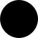
|
Color=BLACK, Style=FILL
|
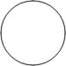
|
Color=BLACK, Style=STROKE
|
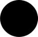
|
Color=BLACK,Style=FILL_AND_STROKE
|
3.
Modify the main Activity class (MainActivity.java) as follows:
Line# Source Code
1 package com.example.guiexam;
2 import android.os.Bundle;
3 import android.app.Activity;
4 import android.view.Menu;
5 public class MainActivity extends Activity {
6 @Override
7 public void onCreate(Bundle savedInstanceState) {
8 super.onCreate(savedInstanceState);
9 // setContentView(R.layout.activity_main);
10 setContentView(new MyView(this));
11
}
12 ......
The system automatically overrides the code in line 7 with the code in line 8. This allows a custom view class instead of the default layout as the interface of the activity.
The application interface is as shown in Figure 10-2; (a) shows the entire interface, and (b) is the enlarged section of the graphical display.
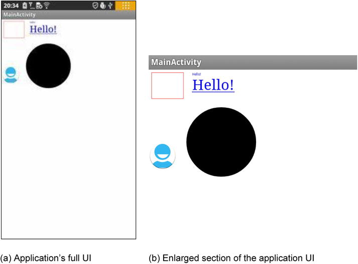
Figure 10-2.
The interface of the display output framework of the GuiExamapplication
Drawing Framework for Responding to Touchscreen Input
The previous example application only displays images/graphics and cannot respond to touchscreen input. In this section, you see how to respond to touchscreen input and control the view display.
View has an onTouchEvent function with the following function prototype:
boolean View.onTouchEvent(MotionEvent event);
When a user clicks, releases, moves, or does other interactive actions on the touchscreen, a touch input event is generated. This touch input event triggers the call to View.onTouchEvent. To allow users to process touchscreen input, you need to rewrite this function. The response code needs to be written in the function’s body.
View.onTouchEvent has a parameter of type MotionEvent that defines the coordinate position of the touch point, event type, and so on of the MotionEvent class. The event types can be MotionEvent.ACTION_DOWN, MotionEvent.ACTION_MOVE, MotionEvent.ACTION_UP, or equivalent, as defined constants in the MotionEvent class. The constants represent interactive actions such as a touchscreen press, touchscreen move, touchscreen pop-up, and so on.
As discussed earlier, whenever the view needs to be redrawn, the function is called, so the drawing code needs to be put into the function. Most of the time, the system can automatically trigger redraw events; but because users design their own redraws, the system does not know when they need to be triggered. For example, perhaps a user updates the display content, but the location, size, and levels of the content are not changed; as a result, the system does not trigger the redraw event. In this situation, the user needs to call the class function postInvalidate or invalidate of the View class to proactively generate the redraw events. The function prototype is
void View.invalidate(Rect dirty)
void View.invalidate(int l, int t, int r, int b)
void View.invalidate()
void View.postInvalidate(int left, int top, int right, int bottom)
void View.postInvalidate()
The postInvalidate and functions with no parameters redraw the entire view; the postInvalidate and invalidate functions with parameters redraw the designated area (or certain area) of the view. The difference between postInvalidate and invalidate with and without constants is that the first case requires an event loop until the next issue to produce the redraw event, whereas the second one immediately issues a redraw.
The following example illustrates the framework of drawing code that responds to touchscreen input. The interface of the application is shown in Figure 10-3.
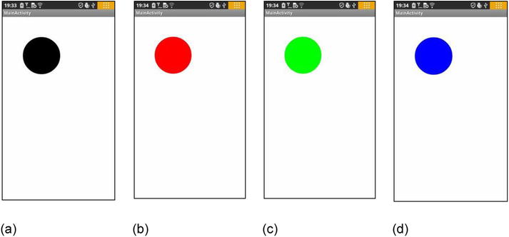
Figure 10-3.
The interface of a GuiExam input graphics framework that responds to the touchscreen
The application starts in Figure 10-3(a). When the user clicks inside a circle (touches the screen within the circle area), the color of the circle changes: it cycles through black, red, green, and blue, as shown in Figure 10-3(a)–(d). If you click outside the circle, the circle does not change colors.
Using the same example as in the earlier section, modify the custom view class MyView.java as follows:
Line# Source Code
1 package com.example.guiexam;
2
3 import android.view.View;
4 import android.graphics.Canvas;
5 import android.graphics.Paint;
6 import android.content.Context;
7
8 import android.graphics.Color;
9 import android.view.MotionEvent;
10 import java.lang.Math;
11 public class MyView extends View {
12 private float cx = 250; // Default X Coordinate of Circle
13 private float cy = 250; // Default Y Coordinate of Circle
14 private int radius = 120; // Radius
15 private int colorArray[] = {Color.BLACK, Color.RED, Color.GREEN, Color.BLUE };
16
// Defines an array of colors
17 private int colorIdx = 0; // Custom color subscript
private Paint paint; // Define Paint
18
19 public MyView(Context context) {
20 super(context);
21 paint = new Paint(); // Initialization paintbrush
22 paint.setAntiAlias(true); // Setting anti-aliasing
23 paint.setColor(colorArray[colorIdx]); // Set the pen color
}
24
25 @Override
26 protected void onDraw(Canvas canvas) {
27 canvas.drawCircle(cx, cy, radius, paint);
}
28
29 @Override
30 public boolean onTouchEvent(MotionEvent event) {
31 float px = event.getX();
32
// defined the touch point in the X, Y coordinates
33 float py = event.getY();
34 switch (event.getAction()) {
35 case MotionEvent.ACTION_DOWN:
36
// Touch screen pressed
37 if (Math.abs(px-cx) < radius
&&
Math.abs(py-cy) < radius){
38
// Touch location inside the circle
39 colorIdx = (colorIdx + 1) % colorArray.length;
40 paint.setColor(colorArray[colorIdx]);
41
// Set paintbrush color
42 }
43 postInvalidate(); // Repaint
44 break;
45 case MotionEvent.ACTION_MOVE: // Screen touch and move
46 break;
47 case MotionEvent.ACTION_UP: // Screen touch unpressed
break;
}
return true;
}
}
Lines 15 and 16 define an array of colors and color indices, and line 17 defines paintbrush variables. Lines 20–22 of the constructor function complete the initialization of the brush property settings. The reason you do not put the code for the paintbrush property set in View.Ondraw is to avoid repeated calculations for each redraw. The only work for the onDraw function is to display the circle.
In lines 28–46, you create the new touch input event response function onTouchEvent. In lines 30 and 32, you first get the X, Y coordinates of the touch point using the getX and getY functions of the MotionEvent class. Then you obtain the input action type through the getAction function of the MotionEvent class in line 34, followed by a case statement to complete the different input actions. The response to the action of pressing the touchscreen is in lines 37–43. You determine whether the touch point is within the circle in line 37. Then you modify the codes that set the colors and change the pen color in lines 39–40. You call the postInvalidate function notification to redraw in line 43 and provide it with the final finishing touch.
Multi-Touch Code Framework
Most Android devices support multi-touch touchscreens. The good news is that the Android system software also provides multi-touch support. This section covers the multi-touch code framework.
The touch event class MotionEvent has a getPointerCount() function that returns the current number of touch points on the screen. The function prototype is
final int MotionEvent.getPointerCount();
You can also use the getX and getY functions discussed earlier to obtain the coordinates of the touch point. The prototypes are as follows:
final float MotionEvent.getX(int pointerIndex)
final float MotionEvent.getX()
final float MotionEvent.getY(int pointerIndex)
final float MotionEvent.getY()
In the previous section, you got the coordinates of a single touch point using a function with no parameters. The getX/getY functions with parameters are used to get the position of the touch point in the multi-point touch situation, where the parameter pointerIndex is the index number for the touch point. This is an integer number starting at 0.
Here is an example to illustrate the multi-touch programming framework. This example is a two-point touch application that zooms a circle in and out. The application interface is shown in Figure 10-4.
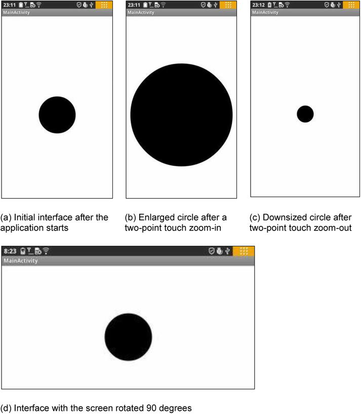
Figure 10-4.
The interface of the two-point touch zoom-in/zoom-out GuiExam graphic application
The application’s launch interface is shown in Figure 10-4(a). The circle is always at the center of the view, but the size of the circle (its radius) can be controlled by a two-point touch. The center is the center of the view, not the center of the activity or the center of the screen. The so-called two-point touchscreen means there are two touch points, or two fingers moving on the screen at the same time, either in an expand gesture where the circle becomes larger (b) or in squeeze gesture where the circle becomes smaller (c). The code is as follows:
Line# Source Code
1 package com.example.guiexam;
2
3 import android.view.View;
4 import android.graphics.Canvas;
5 import android.graphics.Paint;
6 import android.content.Context;
7
8 import android.view.MotionEvent;
9 import java.lang.Math;
10 public class MyView extends View {
11 private static final int initRadius = 120; // initial value of the radius
12 private float cx; // X coordinate of the circle
13 private float cy; // Y coordinate of the circle
14 private int radius = initRadius; // Set initial value of the radius
15 public float graphScale = 1; // Set Scale factor for one two-point touch move
16 private float preInterPointDistance; // Pre-distance of two touch points
17 private boolean bScreenPress = false; // The sign of the screen being pressed down
18 private Paint paint; // Define paintbrush
19 public MyView(Context context) {
20 super(context);
21 paint = new Paint(); // Initialize paintbrush
22 paint.setAntiAlias(true); // Set Anti Alias
23 }
24 @Override
25 protected void onDraw(Canvas canvas) {
26 cx = canvas.getWidth()/2; // Let circle center positioned at the screen of the screen
27 cy = canvas.getHeight()/2;
28 canvas.drawCircle(cx, cy, radius*graphScale, paint);
29 }
30 @Override
31 public boolean onTouchEvent(MotionEvent event) {
32 float px1, py1; // Define the X,Y coordinates of 1st touch point
33 float px2, py2; // Define the X,Y coordinates of 2nd touch point
34 float interPointDistance; // distance between two touch points
35 switch (event.getAction()) {
36 case MotionEvent.ACTION_DOWN: // Screen touch pressed
37 break;
38 case MotionEvent.ACTION_MOVE: // Screen touch move
39 if (event.getPointerCount() == 2 ) {
40 px1 = event.getX(0); // Get the X,Y coordinate of the first touch point
41 py1 = event.getY(0);
42 px2 = event.getX(1); // Get the X,Y coordinate of the second touch point
43 py2 = event.getY(1);
44 interPointDistance = (float) Math.sqrt((px6-px2)*(px6-px2)+(py1 - py2)*(py1 - py2));
45 if (!bScreenPress){
46 bScreenPress = true;
47 preInterPointDistance = interPointDistance;
48 } else {
49 graphScale = interPointDistance / preInterPointDistance;
50 invalidate(); // Redraw graphics
51 }
52 } else {
53 bScreenPress = false;
54 radius = (int)(radius * graphScale);
55
// One downsize/enlarge circle end. Record final scale factor
56 }
57 break;
58 case MotionEvent.ACTION_UP: // Screen touch lift up
59 bScreenPress = false;
60 radius = (int)(radius * graphScale);
61
// One downsize/enlarge circle end. Record final scale factor
62 break;
63 }
64 return true;
}
}
This code defines a scaling factor graphScale for a two-point touch in line 15 and a variable preInterPointDistance in line 16 to record the distance between the two touch points. Line 17 defines the flag variable bScreenPress when the screen is pressed.
Lines 26 and 27 call getWidth and getHeight of the Canvas class in the onDraw function to get the view’s width and height, and then allocate the center of the circle in the center of the view. The advantage of this step is that, when the screen rotates 90 degrees, the circle remains in the center of the view, as shown in Figure 10-4(d). The difference between these examples and the previous one is that this time the radius of the circle being drawn is equal to the radius of the circle multiplied by the scaling factor graphScale.
Lines 32–61 contain onDraw based on the modified example in the previous section. Lines 38–56 are the response code for a touch-move activity. Line 3 determines whether there are two touch points; if there are, you run code lines 40–51; otherwise, you run lines 53–54. You set the flag bScreenPress to false to indicate when the two touch points are first pressed, and then you record the final radius as equal to the current value of the radius multiplied by the scaling factor graphScale. You get the position coordinates of the two touch points in lines 40–43. Line 44 calculates the distance between the two touch points. Line 45 determines whether it is the first press; if it is, lines 46 and 47 run, and record the distance between the two touch points; otherwise, the code in lines 49‒50 runs. Here you calculate the scaling factor based on the current distance between the points and the distance in the previous movement. After this, the graphic is redrawn.
To handle the location of the flag bScreenPress, you execute the response code of the screen touch-up activity in lines 58–60, which is similar to the non-two-point touch code in lines 53 and 54.
Responding to Keyboard Input
Most Android devices have a number of hardware buttons, such as Volume +, Volume -, Power, Home, Menu, Back, Search, and so on. Some Android devices are also equipped with keyboards. Keyboards, including the device’s hardware buttons, are important input methods for Android applications. Keyboard input corresponds to keyboard events, named KeyEvent (also known as a pressing key event). In this section, you learn about the methods to respond to keyboard input.
In Android, both the Activity and View classes can receive pressed-key events. Key events trigger calls to the onKeyDown function of the Activity or View class. The function prototype is
boolean Activity.onKeyDown(int keyCode, KeyEvent event);
boolean View.onKeyDown(int keyCode, KeyEvent event);
The keyCode parameter is the index code of the key that is pressed. Each key in Android has a unique number, which is the keyCode. Some of the key codes were described in Table 7-1. The key event, KeyEvent, contains properties related to buttons, such as the frequency with which they are pressed. To handle key events, you need to override the onKeyDown function and add your own response-handling code.
Interestingly, although the Activity and View classes can receive key events, the view is often included in the activity. When the button is pressed, the event first sends external activity; that is, the activity receives the event sooner. The following example shows how you respond to the button press by rewriting the activity’s onKeyDown function.
This example shows how to use the arrow keys to move the circle in the application. The application interface is shown in Figure 10-5.
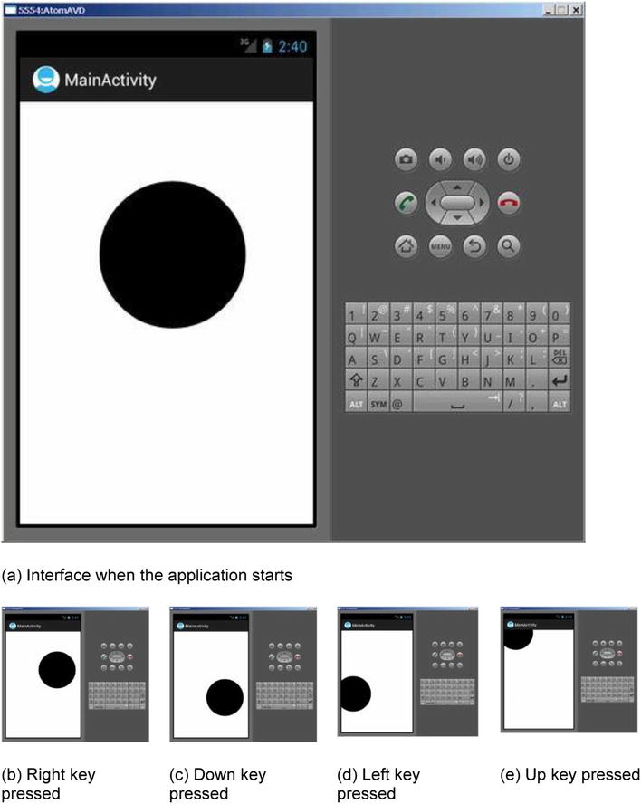
Figure 10-5.
Using keys to control the movement of the circle in the application interface
The Lenovo phone on which we are testing has no keypad, so we chose to run the application on a virtual machine. The virtual machine has Left, Down, Right, and Up keys to achieve these circle movements. The application startup interface is shown in Figure 10-5(a). Pressing the Left, Down, Right, or Up button makes the circle move in the corresponding direction. The interface examples are shown in Figure 10-5(b) through (e).
This application is based on the example, created at the beginning of this chapter (Figure 10-1) and modified per the following procedure:
4.
Modify the source code of MyView.java as follows:
Line# Source Code
1 package com.example.guiexam;
2
3 import android.view.View;
4 import android.graphics.Canvas;
5 import android.graphics.Paint;
6 import android.content.Context;
7 public class MyView extends View {
8 private float cx = 250; // X coordinate of the circle
9 private float cy = 250; // Y coordinate of the circle
10 private static final int radius = 120; // Radius of the circle
11 private Paint paint; // define paint brush
12 private static final int MOVESTEP = 10; // the step length for pressing direction key
13 public MyView(Context context) {
14 super(context);
15 paint = new Paint(); // Paint brush initialization
16 paint.setAntiAlias(true); // Set Anti Alias
17 }
18 @Override
19 protected void onDraw(Canvas canvas) {
20 canvas.drawCircle(cx, cy, radius, paint);
21 }
22 ////// Self-define function:press key to move graphic (circle) //////
23 public void moveCircleByPressKey(int horizon, int vertical){
24 if (horizon < 0) // horizontal move
25 cx -= MOVESTEP;
26 else if (horizon > 0)
27 cx += MOVESTEP;
28 if (vertical < 0)
29 cy += MOVESTEP; // vertical move
30 else if (vertical > 0)
31 cy -= MOVESTEP;
32 postInvalidate(); // note to repaint
33 }
34 }
In lines 23–33, you add a function to the view class to move the image (the circle)by pressing the horizon or vertical key. This function takes two arguments: horizon and vertical. If horizon is less than 0, you decrease the X coordinate value of the circle, and as a result, the circle moves to the left. If horizon is greater than 0, you increase the X coordinate value of the circle, which moves the circle to the right. You do a similar operation for the vertical parameters to move the circle up and down. Line 32 updates the graphics routine with new parameters and trigger the view to redraw.
5.
Modify the source code of the main activity class MainActivity.java as follows:
Line# Source Code
1 package com.example.guiexam;
2 import android.os.Bundle;
3 import android.app.Activity;
4 import android.view.Menu;
5 import android.view.KeyEvent; // Key press event class
6 public class MainActivity extends Activity {
7 private MyView theView =null; // View object stored inside the variable
8 @Override
9 public void onCreate(Bundle savedInstanceState) {
10 super.onCreate(savedInstanceState);
11 theView = new MyView(this); // record the View class of the Activity
12 setContentView(theView);
13 }
14 @Override
15 public boolean onCreateOptionsMenu(Menu menu) {
16 getMenuInflater().inflate(R.menu.activity_main, menu);
17 return true;
18 }
19 @Override // Key down response function
20 public boolean onKeyDown(int keyCode, KeyEvent event) {
21 int horizon = 0; int vertical = 0;
22 switch (keyCode)
23 {
24 case KeyEvent.KEYCODE_DPAD_LEFT:
25 horizon = -1;
26 break;
27 case KeyEvent.KEYCODE_DPAD_RIGHT:
28 horizon = 1;
29 break;
30 case KeyEvent.KEYCODE_DPAD_UP:
31 vertical = 1;
32 break;
33 case KeyEvent.KEYCODE_DPAD_DOWN:
34 vertical = -1;
35 break;
36 default:
37 super.onKeyDown(keyCode, event);
38 }
39 if (!(horizon == 0
&&
vertical == 0))
40 theView.moveCircleByPressKey(horizon,vertical);
41 return true;
42 }
43 }
In this code, you want the Activity class to receive and respond to key-down events, so you overwrite the onKeyDown function in lines 19–42 with the button-response code. Although the response function for key buttons is located in the Activity class, the display updates are to be implemented in the view MyView class, so you must make the Activity class aware of its corresponding view object. To do so, you add a record-view object variable theView in line 7. In lines 11 and 12, you let theView record this object when constructing the view object.
In the key-down response function onKeyDown, you use a switchcase statement (lines 22–38) and take different actions according to the different keys. The function’s keyCode parameter specifies the key number of the key that is pressed. For example, the code in lines 24–26 is the handling code for the Left key. It sets a horizontal flag to “left” and then calls the self-defined function moveCircleByPressKey of the view class to move the circle in lines 39 and 40. To allow other key-press-down events to be addressed, you call the system’s default handler to deal with other keys in lines 36 and 37.
Dialog Boxes in Android
There are three different ways to use dialog boxes in Android, as discussed in this section.
Using an Activity’s Dialog Theme
The Dialog class implements a simple floating window that can be created in an activity. By using a basic Dialog class, you can create a new instance and set its title and layout. Dialog themes can be applied to a normal activity to make it look similar to a dialog box.
In addition, the Activity class provides a convenient mechanism to create, save, and restore dialogs, such as onCreateDialog(int), onPrepareDialog(int, Dialog), showDialog(int), dismissDialog(int), and other functions. If you use these functions, the activity can return the Activity object that manages the dialog through the getOwnerActivity() method.
The following are specific instructions for using these functions.
onCreateDialog(int) Function
When you use this callback function, Android sets this activity as the owner of each dialog box, which automatically manages the state of each dialog box and anchors it to the activity. In this way, each dialog inherits the specific attributes of this activity. For example, when a dialog box is opened, the menu button displays the option menu defined for the activity. For example, you can use the volume keys to modify the audio stream that the activity uses.
showDialog(int) Function
When you want to display a dialog box, you call the showDialog(intid) method and pass an integer through this function call that uniquely identifies this dialog. When the dialog box is first requested, Android calls onCreateDialog(intid) from the activity. You should initialize this dialog box. This callback method is passed to the same ID that showDialog(intid) has. When you create the dialog box, the object is returned at the end of the activity.
onPrepareDialog(int, Dialog) Function
Before the dialog box is displayed, Android also calls the optional callback function onPrepareDialog(int id, Dialog). If you want the properties to be changed every time a dialog box is opened, you can define this method. Unlike the onCreateDialog(int) function, which can only be called the first time you open the dialog box, this method is called each time you open the dialog box. If you do not define onPrepareDialog(), then the dialog remains the same as the last time it was opened. The dialog box’s ID and the dialog object created in onCreateDialog() can also be passed to the function by this method.
dismissDialog(int) Function
When you are ready to close the dialog box, you can call dismiss() through this dialog box method to eliminate it. If desired, you can also call dismissDialog(int id) method from the activity. If you want to use the onCreateDialog(int id) method to retain the state of your dialog box, then each time the dialog box is eliminated, the status of the object of this dialog box object is kept in the activity. If you decide that you no longer need this object or clear the state, then you should call removeDialog(intid). This removes any internal object references, and even if the dialog box is being displayed, it is eliminated.
Using a Specific Dialog Class
Android provides multiple classes that are expansions of the Dialog class, such as AlertDialog, ProgressDialog, and so on. Each class is designed to provide specific dialog box functions. The screen interface based on the Dialog class is created in all activities that then call the specific class. So it does not need to be registered in the manifest file, and its life cycle is controlled by the activity that calls the class.
Using Toast Reminders
Toasts are special, nonmodular, transient message dialog boxes, usually used in the broadcast receiver and backgroundservices, and used to prompt user events.
Dialog Box Example
Of the dialog box methods discussed, if it is measured by how the implementation of the function is done, the first function is the most powerful, followed by the second and third. In terms of the degree of sophistication of the implementation code, the third method is the simplest, and the first and the second are more complex.
The following example demonstrates the second method. See Android’s help documentation and samples (in the samples directory located under the Android SDK installation directory) to learn more about the other implementation methods.
The specific dialog box class that this sample application uses is the Builder inner class of AlertDialog. When you press the Back button, a dialog box pops up, allowing you to decide whether to exit the application. The application interface is shown in Figure 10-6. Using the Android dialog box in this example will help you understand its usage.
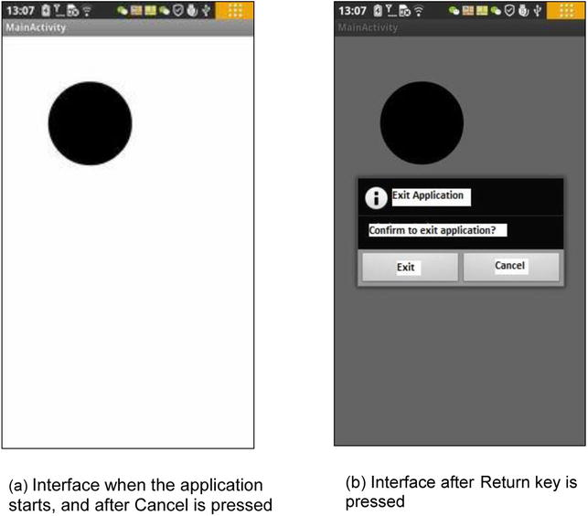
Figure 10-6.
The application interface with an Exit dialog box
The application starts and displays the main activity interface, as shown in Figure 10-6(a). When you press the device’s Back button, the Exit dialog box pops up, as shown in Figure 10-6(b). When you click the Exit button, the application exits, and the interface is also closed. When you click the Cancel button, the application returns to the previous screen, similar to Figure 10-6(a).
Modify the source code of the activity class MainActivity.java to read as follows:
Line# Source Code
1 package com.example.guiexam;
2 import android.os.Bundle;
3 import android.app.Activity;
4 import android.view.Menu;
5 import android.view.KeyEvent; // Key event class
6 import android.app.Dialog; // Use Dialog class
7 import android.app.AlertDialog; // Use AlertDialog class
8 import android.content.DialogInterface; // Use DialogInterface interface
9 public class MainActivity extends Activity {
10 private MyView theView =null; // View objects stored inside the variable
11 private AlertDialog.Builder exitAppChooseDlg = null; // Exit App dialog box
12 private Dialog dlgExitApp = null;
13 @Override
14 public void onCreate(Bundle savedInstanceState) {
15 super.onCreate(savedInstanceState);
16 theView = new MyView(this); // View class of Record My Activity
17 setContentView(theView);
18 exitAppChooseDlg = new AlertDialog.Builder(this);
19
// Define AlertDialog.Builder object
20 exitAppChooseDlg.setTitle("Exit Selection");
21
// Define the title of the dialog box
exitAppChooseDlg.setMessage("Confirm to exit application?");
22
// Define the display text of the dialog box
23 exitAppChooseDlg.setIcon(android.R.drawable.ic_dialog_info);
24
// Define the icon of the dialog box
25
26
// Set the leftmost button and click response class
27 exitAppChooseDlg.setPositiveButton("Exit", new DialogInterface.OnClickListener() {
28 public void onClick(DialogInterface dialog, int which) {
29 dialog.dismiss(); // Close Dialog Box
/*MainActivity.*/finish(); // Exit (main) Activity
30 System.exit(0); // Exit Application
31 }
32 });
33
34
// Set the rightmost button and click response class
35 exitAppChooseDlg.setNegativeButton("Cancel", new DialogInterface.OnClickListener() {
36 public void onClick(DialogInterface dialog, int which) {
37 dialog.cancel(); // Close dialog box
}
38 });
39 dlgExitApp = exitAppChooseDlg.create();
40
// Create dialog box exit object
41 }
42
@Override
43 public boolean onCreateOptionsMenu(Menu menu) {
44 getMenuInflater().inflate(R.menu.activity_main, menu);
45 return true;
46 }
47
48 @Override // Key down response function
49 public boolean onKeyDown(int keyCode, KeyEvent event) {
50 int horizon = 0; int vertical = 0;
51 switch (keyCode)
52 {
53 case KeyEvent.KEYCODE_DPAD_LEFT:
54 horizon = -1;
55 break;
56 case KeyEvent.KEYCODE_DPAD_RIGHT:
57 horizon = 1;
58 break;
59 case KeyEvent.KEYCODE_DPAD_UP:
60 vertical = 1;
61 break;
62 case KeyEvent.KEYCODE_DPAD_DOWN:
63 vertical = -1;
64 break;
65 case KeyEvent.KEYCODE_BACK:
66 if (event.getRepeatCount() == 0) {
67 dlgExitApp.show();
68
// Display AlertDialog.Builder dialog box
69 }
70 break;
71 default:
72 super.onKeyDown(keyCode, event);
}
if (!(horizon == 0 && vertical == 0))
theView.moveCircleByPressKey(horizon,vertical);
return true;
}
}
Lines 11 and 12 define the AlertDialog.Builder class and its associated variable for the Dialog class in the Activity class. You modify the onCreate function code in lines 18–36 and define the code to prepare the dialog box. In line 18, you construct the AlertDialog.Builder class object; the prototype of this constructor function is
AlertDialog.Builder(Context context)
AlertDialog.Builder(Context context, int theme)
You use the first prototype in this example to pass the Activity object, which constructs the dialog box as the context of the constructor function. This is followed by setting the title display text, icons, and other attributes of the dialog box in lines 19 and 21.
The AlertDialog.Builder dialog box can take up to three buttons: left, middle, and right. They are set up by the setPositiveButton, setNeutralButton, and setNegativeButton functions, respectively. You can specify how many dialog box buttons you need. This example uses two buttons: left and right.
Lines 23–29 set the left button of the dialog box and click-response code. The prototype of the function of the AlertDialog.Builder class is
AlertDialog.Builder setPositiveButton(int textId, DialogInterface.OnClickListener listener)
AlertDialog.Builder setPositiveButton(CharSequence text, DialogInterface.OnClickListener listener)
You use a second prototype in the example, where the first parameter is text displayed by the button, and the second parameter is the interface object of the click response.
In line 25, you first call the dismissal or cancel function of the class to close the dialog box. DialogInterface is the operating interface of the dialog class (AlertDialog, Dialog, and so on). You use the dismiss function to close the dialog box in line 25 and use a cancel function to close the dialog box in line 33.
Lines 26–27 close the activity and application, as described in the section “Exit Activities and Application.” in Chapter 8, Figure 8-16. Interestingly, the internal class DialogInterface.OnClickListener uses a member function of the non-dot external class MainActivity and does not need to add the prefix in front of “class name.”
You set the dialog box for the right button and click-response code in lines 36–35. The click-response code is relatively simple, using the cancel function of the DialogInterface class to close the dialog box in line 33.
Finally, line 36 calls the create function of the AlertDialog.Builder class to create the exit dialog box object dlgExitApp. The function returns an AlertDialog object, and its prototype is
AlertDialog create()
Because AlertDialog is derived from the Dialog class, the return value can be assigned to the Dialog variable.
You add the Back key response code for the response function on lines 60‒64. The code is relatively simple: you determine whether duplicate keys are pressed on line 61, and then you call the show function of the Dialog class to display a dialog box.
Application Property Settings
In Android device, there are two difference places where you can find out the information about the applications installed. One is the menu list (the interface after you press the setting button), the other is by going to the Settings ➤ Applications ➤ Manage Applications ➤ Downloaded menu item. See Figure 10-7:
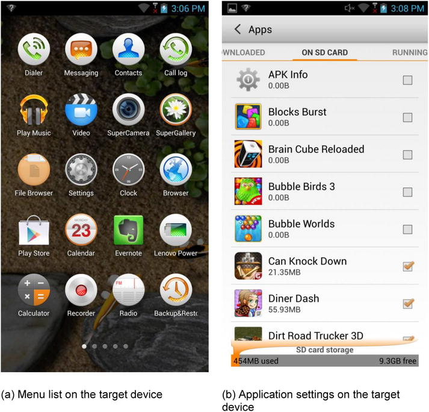
Figure 10-7.
The difference of Menulist and Application Setting display on target device
So far, almost all the examples have been based on the code framework of two applications: GuiExam and HelloAndroid. But it is difficult to distinguish between them in the menu on the target device. These applications are indistinguishable in the menu list because you used the default settings instead of applying their own property settings. This section shows you how to apply property settings.
Figure 10-8 shows the applications setting interface before and after applying property settings.
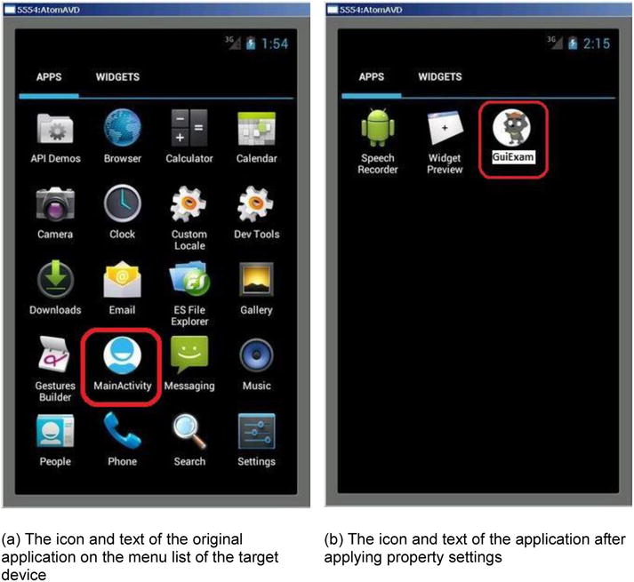
Figure 10-8.
The application on the target device before and after applying property setting
This example uses the GuiExam application to show the steps for changing the application settings:
1.
Modify the icon of the application in the menu on the target machine. Based on the ic_launcher.png file size under the application res\drawable-XXX directory (where XXX represents different resolutions—for example, drawable-hdpi represents the directory for high-resolution images), edit your image file, and name it ic_launcher.png.
The common screen resolutions for Android devices and the directories where application icon files are stored are shown in Table 10-2.
Table 10-2.
Common Android Device Screen Resolutions and the Directories Containing Application Icon Sizes
Directory Name | Size | Description |
|---|---|---|
drawable-ldpi
| 36 × 36 dpi | Low-resolution screen |
drawable-mdpi
| 48 × 48 dpi | Medium-resolution screen |
drawable-hdpi
| 72 × 72 dpi | High-resolution screen |
drawable-xhdpi
| 96 × 96 dpi | Super-high-resolution screen |
drawable-xxhdpi
| 144 × 144 dpi | Extra-extra-high-resolution screen |
2.
Put the custom picture file in the corresponding directory res\drawable-XXX, and replace the original file. For example, for the high-resolution screen application, replace the file ic_launcher.png in res\drawable-xhdpi with your own, as shown in Figure 10-9.
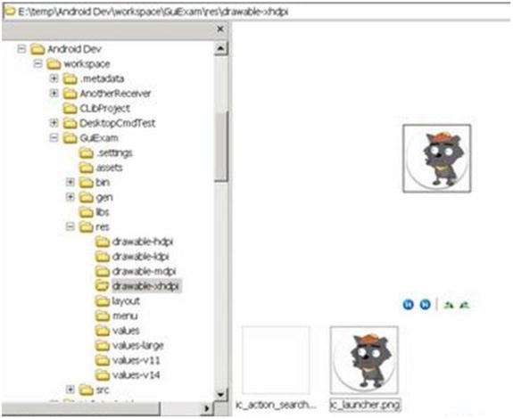
Figure 10-9.
Replacing the application icon
3.
Modify the application’s menu text annotation on the target machine.
Open the Package Explorer pane of the \res\values\strings.xml file. The title_activity_my_main string value is set to a custom string (in this case, “GUI examples”), as shown in Figure 10-10.
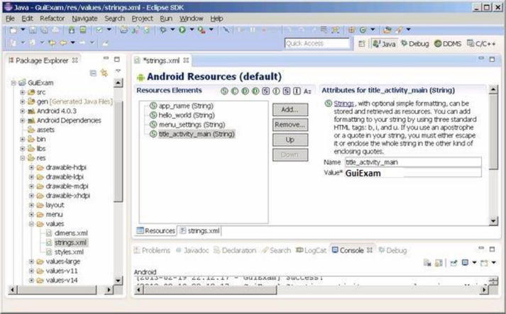
Figure 10-10.
Modifying the icon text of the application
After completing these modifications, you can see that the target application’s menu item’s icon and text label have changed.
Note step 1 can also be implemented by another method that can generate its own set of icons when the application is created. The procedure is as follows:
1.
In the Configure Launcher Icon dialog box, click the Image button, and then click the Browse button to the right of Image File.
2.
Select the picture file as the application icon (in this case, graywolf.png) in the Open dialog box, as shown in Figure 10-11.
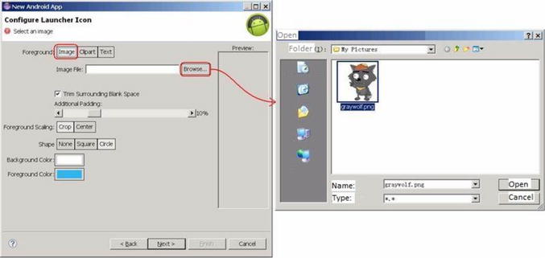
Figure 10-11.
Selecting the icon file when generating the application
The Configure Launcher Icon dialog box is shown in Figure 10-12.
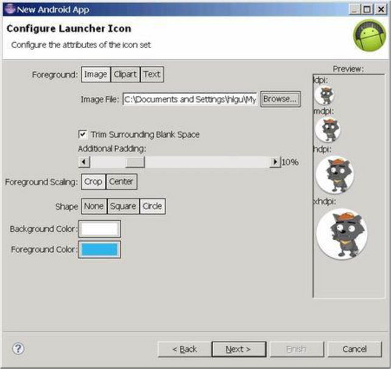
Figure 10-12.
Configuring the launcher icon when generating the application
In other words, Eclipse can, based on the user-specified image file, automatically generate the various ic_launcher.png files with the appropriate dimensions in the res\drawable-XXX directory. This eliminates the need to manually edit the images.
Summary
In this last chapter covering Android GUI design, you are introduced to the basic framework of drawings in the view, the concept of how the drawing Framework responds to touch screen input, and how to control the display of the view as well as the multi-touch code framework. You use an example that illustrates the multi-touch programming framework and keyboard input response. You learn the methods to respond to keyboard input and hardware buttons that are available on Android devices, such as Volume +, Volume -, Power, Home, Menu, Back, Search, and so on. You are introduced to the three different dialog boxes for Android, which include the activity dialog theme, a specific class dialog, and Toast reminder. At the end of chapter you learn how to change the application property settings. In the next chapter, you will introduce the performance optimization for android application on x86. Android is a resource-limited system, and it therefore requires very strict resource utilization in space and time. Compared with a desktop system, the performance optimization for applications for Android is thus far more critical and urgent. You will first introduce the basic principles of SOC performance optimization, followed by the introduction of principles and methodology of performance optimization for Android-based development on Intel architecture.